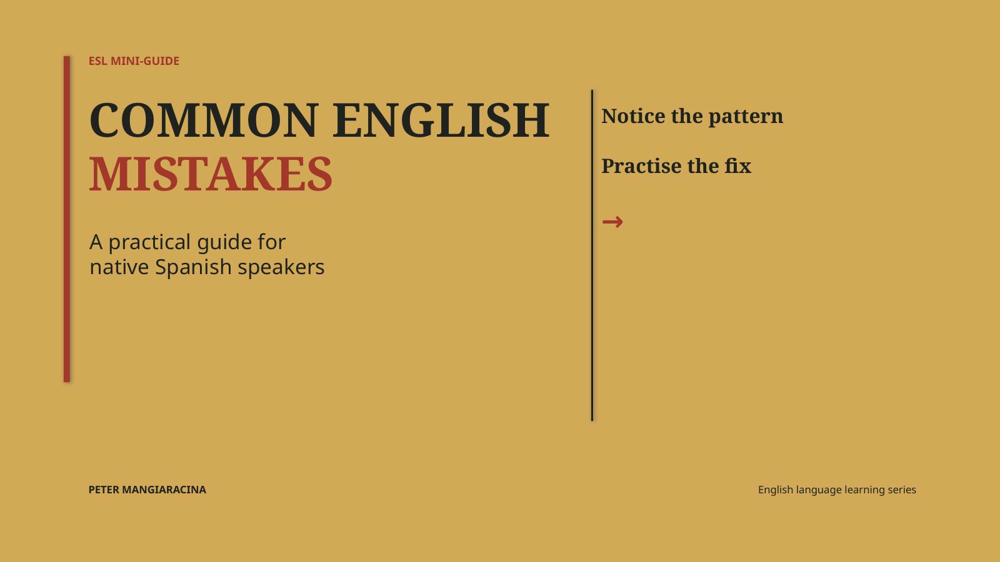
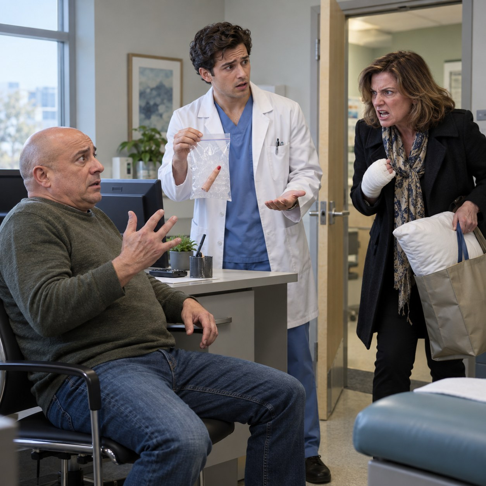

Presentation
Common Mistakes of
Native Spanish Speakers
Recognize common errors caused by Spanish-to-English translation and practise the fixes.
Open presentation ↗We don't learn a language by studying grammar rules. We learn by opening our ears.
Listen to how the language is used. Imitate what you hear. Repeat until the structures become familiar. Then listen again.
Read about my method ↗
Recognize common errors caused by Spanish-to-English translation and practise the fixes.
Open presentation ↗
A man goes to a plastic surgeon’s office with a suspicious finger.
Read the dialogue ↗A reading inspired by Rome, with room for questions and discoveries.
Sample reading concept: a walk through ancient Rome, exploring the words “ruin,” “restore,” and “remain.” A reading document and discussion questions will follow.
A small listening experiment for the next time English feels too fast.
Listen to a short clip once for the main idea. Listen again for one useful phrase. Say it aloud, then use it in a sentence of your own.
I have written three workbooks for my students, covering beginning, intermediate and advanced English.
Common vocabulary and idioms for getting around in English. Written for complete beginners through to a pre-intermediate level.
Builds on basic grammar, with reading comprehension and common phrases in each chapter.
Expands vocabulary and reading comprehension, with advanced grammar points and pronunciation.
These are my original teaching materials, available only to current students. Chapters are supplied individually as we work through the book.

I'm a New Yorker, psychologist, and English teacher based in the Canary Islands, Spain. For nearly forty years, I've taught English and studied how people learn languages, developing my own materials and a teaching approach grounded in psychology, sentence structure, and practical use.
I work with students at every level, including doctors and other professionals who need English for their careers. My aim is to help students understand how the language works and use it confidently—in conversation, in writing, and when presenting their ideas.
I'm also a published author, with more than a dozen short stories in print. My novel, The Canary Killer, a psychological crime thriller set in the Canary Islands, is due to be published in 2027.
Outside teaching and writing, my interests include reading, videography, modern technology, and playing jazz guitar. I have a particular love of Roman history and enjoy exploring the ruins of Rome whenever I visit.
I speak English, hablo español, e parlo un po' l'italiano!
I am a psychologist and have taught English for nearly forty years. I have been certified by the Accrediting Council for Continuing Education and Training (USA). Currently, I teach doctors and other professionals in the Canary Islands, Spain.
I have my own natural and cognitive method of teaching, using materials I have developed over the years, many of them available on the Internet for my students.
I teach all levels from beginning to conversation. I can help prepare presentations or speeches, assist in professional writing (medical articles, business letters, etc.) and test preparation (TOEFL, First and Advanced Certificates, IELTS).
“Tomorrow comes my friend.”
To speak effectively you need to look at language from a cognitive perspective. Many English as a Second Language (ESL) teachers spend most of the time asking you to translate from your native language to English.
However, making an association between your native language, which already exerts a strong influence over your thought process, and a new language, with which you are for the most part unfamiliar, causes you to forget or at best confuse your native tongue with your new language. This causes many syntax errors. For example, my Spanish students frequently say things like, “Tomorrow comes my friend.” Spanish syntax, English words. The problem is much more common than you might think.
We avoid this by teaching “what lies behind” sentences (their structure), for although there are more than one million words in the English language, there are many fewer constructions, with two or three the basis for all the others.
If you learn these constructions by practicing them repeatedly, it becomes a matter of just “plugging in” the vocabulary. Learning these structures, from the simplest to the most complicated, should be the primary goal of any language learning process.